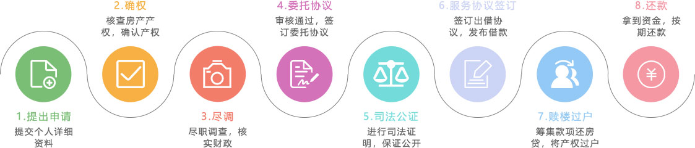
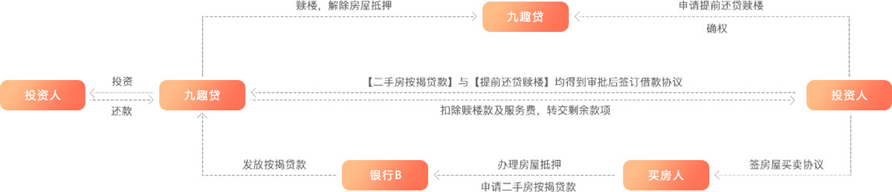

什么是房融贷？
房融贷房融贷业务房产权利人在当前房贷尚未还清时，想要出卖房产、或因房产升值想要申请更大额度贷款，此时房产权利人向九趣网贷款以偿清当前按揭/抵押贷款，赎出《房产证》，此类业务就是房融贷业务。红本(《房屋所有权证》)抵押贷款业务红本抵押贷款是指房产权利人以房产为抵押物，申请贷款，用于各种消费、资金周转和经营性用途的业务。
-
【可靠房源】
RELIABLE SOURCE OF HOUSING
-
【专家评审】
EXPERT REVIEW
-

【真实保证】
TRUTH GUARANTEE
-
【全程监控】
WHOLE PROCESS MONITORING
-
【严格审查】
SERICT CENSORSHIP
房抵押借款办理流程
赎楼贷交易流程
常见问题
1、什么是房融贷？
房融贷是房产权人在出售房产前，用于还当前房贷而筹集资金的项目，房融贷，利率高，有房产实物抵押，风险小。
2、房融贷的风险如何把控？
九趣网有严苛的风控系统，在借款人提出申请时，九趣网会派遣专业的房产评估专家进行现场鉴定，保证出借人投资的是真实、可靠的房产标的。
3、房融贷适合什么样的人投资？
资金量较大，想投资中长期标的比较稳健的出借人进行投资。
4、房融贷的计息方式和到账时间？
计息方式为按月付息到期还本的方式，款项在还款日24点前还到出借人的账户中。
5、如何做好房融贷的风控？
贷前严控：
九趣网设立多重审查环节，保证借款人资料的真实性，一旦发现借款人提供虚假信息，在初审复审环节出现信息不对称的情况，客户都将进入九趣网黑名单，无法再次申请借款。
贷中监控：
进行实地考察，及时了解到借款人家庭、经营、资信等的变化情况，及时调整授信，对家庭和企业的考察是重点：核实家庭和企业的地址，确保逾期后催收工作能正常进行，及时查询判断借款人资信状况和担保物价值。
贷后跟踪:
1、合作机构保障：出借人在回款过程中，若遇到匹配的某一笔债权逾期，合作机构先行垫付，回购其债权。
2、合作机构回购债权的同时，根据标的属性，进行抵押物处理、催收等后续工作，最大程度上保障平台用户的利益。